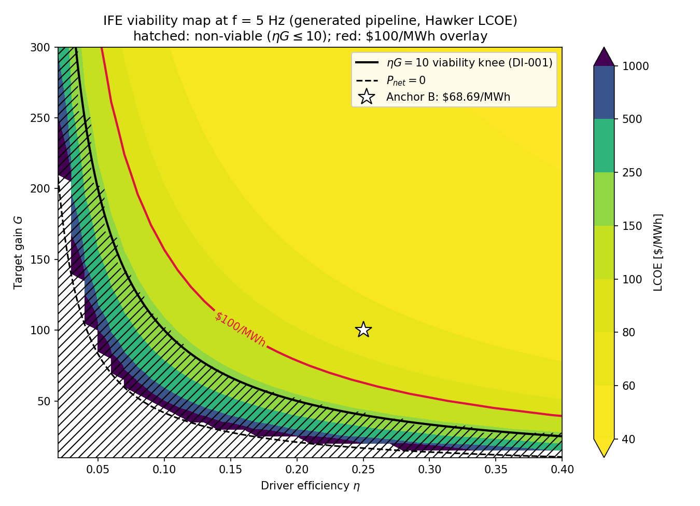
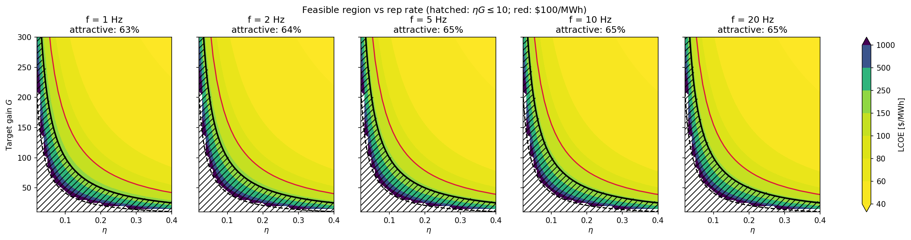

1. The Gap
A model that has never run is a diagram.
The workflow explainer (sections 1–8) ends with a complete SysML v2 cost model of a heavy-ion fusion plant: parsed, cited, validated. But for four months there was only one way to get a number out of it — a human re-typed every formula into a Python script (scripts/verify_ife_lcoe.py) and ran that. The formal model itself had never computed anything.
That gap matters. The whole pitch of model-based engineering is that the model is the source of truth — vary an input, watch outputs and constraints respond. If turning the model into running code requires a human re-deriving the math by hand, the model is documentation, not machinery.
2. The Chain That Ran
Six stages, one direction: from the formal model to a map of the design space.
The subject is the model set from Section 7: Hawker’s 14-parameter LCOE calculation, the fusion-cycle viability relation, Meier’s heavy-ion driver cost chain, and the Osiris plant that binds them. The extraction step parses the 11 SysML files with the syside compiler and carries the compiled expression trees forward — which is why the generated calculation bodies needed no hand translation at all: all six were emitted automatically from the model’s own math, then reviewed line-by-line against the SysML.
$ sysml-codegen generate --models exploration/ife_e2e/models \
--output exploration/ife_e2e/generated --package-name ife_tea
# 2. execute the generated pipeline at the three anchor points
$ python run_anchors.py
anchor A (Hawker defaults) lcoe = 252.2999631 $/MWh rel dev 0.0 PASS
anchor B (realistic HIF) lcoe = 68.6902017 $/MWh rel dev 0.0 PASS
anchor C (Osiris, SV-013) lcoe = 270.1211779 $/MWh rel dev 0.0 PASS
# 3. sweep the design space with the same generated modules
$ python sweep_ife.py
11,505 points (39 η × 59 G × 5 f) in 0.1 s → data/ife_sweep/
Full reproduce commands and artifacts: exploration/ife_e2e/ (staged models, generated package, harnesses, run outputs) and work/active/WI-015_ife-end-to-end-demo/ (report and findings).
3. The Anchor Check
Before trusting a map drawn by generated code, prove the generated code gets the known answers right.
Three anchor points had verified LCOE values, computed independently by the hand-written verification script and reviewed against source literature. The generated pipeline was required to reproduce them within a relative tolerance of 10−6. It did better than that:
| Anchor | Point | Expected ($/MWh) | Executed ($/MWh) | Rel. deviation | Result |
|---|---|---|---|---|---|
| A | Hawker 14-parameter defaults | 252.2999631 | 252.2999631 | 0.0 | EXACT |
| B | Realistic HIF (f = 5 Hz, η = 0.25, Ed = 5 MJ, G = 100) | 68.6902017 | 68.6902017 | 0.0 | EXACT |
| C | Osiris plant point (SV-013) | 270.1211779 | 270.1211779 | 0.0 | EXACT |
Also checked per run: the recirculating power fraction, Meier’s driver cost ($0.975B) and cost-per-joule (γ = $68.247/J), and Meier’s cost of electricity at Osiris (4.74 ¢/kWh against the published ~5 ¢/kWh, inside the ±15% validation band). The whole set is registered as validation entry SV-023, passing.
What broke on the way (nothing was free)
The chain did not run on the first try. Three legal-SysML patterns broke the toolchain downstream of parsing, and each is now a recorded modeling rule:
| Break | Handling |
|---|---|
return-style calc outputs are invisible to code generation (parses and evaluates fine; crashes generation) | Six conversions to out attribute in the canonical models; codegen gap filed |
A part def whose only usage is a redefinition (part :>> driver) is treated as uninstantiated — its cost calc silently dropped | Added a concrete hif_driver_instance; codegen gap filed |
Quoted SysML names ('IFE LCOE') leak into Python identifiers — the generated package isn’t valid Python | Deterministic name sanitizer (sanitize_names.py); codegen gap filed |
Cross-part references (e.g. driver.cost_per_joule = meier_cost.gamma) drop to unwired entry points | Harness feeds run-A outputs into run C explicitly — labeled as glue, not generated wiring |
| Constraint predicates are not emitted at all (a known generator gap) | Viability evaluated harness-side in the sweep, as planned |
Every break has a file:line pointer and a filed finding in work/active/WI-015_ife-end-to-end-demo/findings.md. A companion audit found that none of these traps is caught by the modeling validation stack today — they only surface when the pipeline actually executes (.project/research/20260705-120000_validation-stack-gap-audit.md).
4. The Viability Map
With the generated code proven at the anchors, sweep it: 11,505 combinations of driver efficiency, target gain, and shot rate.

data/ife_sweep/ife_viability_eta_gain.png.Three things the map shows, each a textbook claim now emerging from generated code:
- The knee is real and sharp. The economic cliff sits just above the power-balance line — the “fusion cycle gain” knee the sources describe, reproduced from the model.
- Past the knee, the map goes flat. Once ηG ≳ 25–30, LCOE settles into a broad $50–80/MWh basin and further gain buys little: capital and O&M dominate, not recirculation.
- Driver type sets the required gain. Read the knee at fixed η: a heavy-ion driver (η ≈ 0.25–0.35) needs G ≳ 40; a laser driver at η ≈ 0.07 needs G ≳ 143. DI-001’s per-driver gain requirement, visible as one curve.
Does shot rate move the knee? (the second figure)

data/ife_sweep/ife_viability_by_freq.png.Barely. The knee is set by the power balance, not the shot rate. What rep rate does change is plant size (net power scales with f), so higher f pushes the same physics point to bigger, cheaper-per-MWh plants: the attractive share edges up from 63% at 1 Hz to 65%, and the $100/MWh contour hugs the knee more tightly. The same effect explains anchor A’s $252/MWh at Hawker’s defaults (f = 0.2 Hz): a 44 MW plant is simply too small for its capital assumptions.
Sweep data: data/ife_sweep/sweep_results.csv. Non-swept parameters held at the anchor-B baseline; LCOE reported as undefined where net power ≤ 0.
5. The Blind Derivation
A separate experiment tested the other half of the pipeline claim: can agents derive model physics from the research corpus, not just transcribe it?
The setup was a controlled experiment with a held-out answer key. An agent derived three tokamak relations — fusion power, power balance, magnet cost — from the ingested research corpus alone, firewalled from the existing reference implementation (1costingfe) and every artifact derived from it. Only afterwards did a separate, unfirewalled step compare the derivation against the reference code at real design points.
Adjudicating all divergences: 4 equivalent, 6 both-defensible, 2 answer-key wrong, 4 where one side captures physics the other lacks (3 favoring the derivation, 1 favoring the key). The derivation’s self-declared uncertainty was well calibrated — everything it flagged as weak is exactly where the divergences are.
modeling_project/HYPOTHESIS_DOSSIER.md, section H2.6. What Is Still Open
The model is no longer a diagram — it runs. But the loop closed on the easiest possible terms, and the record says so.
| Open item | What it means |
|---|---|
| Constraints don’t execute | The model’s viability constraint (ηG > 10) parses and evaluates in the compiler, but the code generator silently drops it — the sweep applied it in analysis code, not generated code. Generator fix (Phase 6) filed. |
| Cross-part wiring gap | Bindings that cross part boundaries (the γ → LCOE edge) come out unwired; the harness closed that loop by hand. The biggest gap to fix before plant-scale magnetic-fusion models, where everything is cross-part wiring. |
| Arithmetic-only envelope | Everything proven executes flat arithmetic (+ − × ÷ and powers). No exponentials, conditionals, or loops have been through the chain yet — a toolchain boundary, not a language one. |
| Correctness ≠ truth | Bit-exact anchors prove faithful translation of the model, not that the model is right about the world. No model here has had independent expert review. |
The full hypothesis-by-hypothesis record — every claim, its evidence with file pointers, and its limits stated as prominently as the wins — is the dossier: modeling_project/HYPOTHESIS_DOSSIER.md.
And the callback to where this page started: the next concept family modeled in Section 7’s workflow will not end as a diagram. The path from formal model to running map now exists, its failure modes are characterized with file:line pointers, and the anchor-check pattern travels with it.